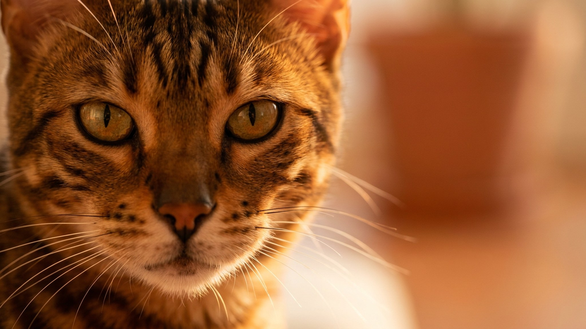

Кашемировая кошка только что обследовала верхнюю полку, спустилась по кошачьей лестнице и готова к новой игре. У этой длинношёрстной разновидности бенгала шелковистая шерсть сочетается с заметной потребностью в движении, поэтому хозяину нужно продумать обе стороны ухода. Ниже: работа с гребнем, вертикальные маршруты, игры и спокойное знакомство с людьми.
🐾 Всё о вашем питомце — в одном приложении
AI-ветеринар, дневник здоровья, напоминания об уходе и прививках. Бесплатно, в Telegram и MAX.
Установить AnimaLife → Открыть в MAX →
У вас iPhone? AnimaLife есть в App Store
Кашемировая кошка относится к длинношёрстной разновидности бенгальской породы. У неё может быть пятнистый или мраморный рисунок. Размер и расположение отметин различаются, поэтому ждать одинакового окраса у всех кошек не стоит. Шерсть обычно описывают как шелковистую. Её длина добавляет владельцу работы с гребнем, а характер остаётся таким же деятельным.
Длина шерсти не усмиряет бенгала. Кошка исследует дом и охотно включается в занятия хозяина. Она может одновременно нуждаться в активной игре и спокойном расчёсывании после неё. Название разновидности говорит о шерсти и не обещает гипоаллергенности.
Для регулярного ухода пригодится металлический гребень с зубьями средней частоты. Расчёсывайте шерсть по направлению роста, небольшими участками, придерживая прядь у основания, если кошке неприятно натяжение. Отдельно проверяйте область за ушами и подмышками: там волосы спутываются от трения. Осмотрите живот и заднюю сторону бёдер, если кошка спокойно позволяет это сделать.
Найденный узелок нельзя тянуть. Сначала попробуйте осторожно разделить его пальцами, затем пройдите по краям гребнем. Плотный колтун рядом с кожей доверьте грумеру, самостоятельно подрезать его ножницами не стоит. Если кошка вырывается или уходит, закончите процедуру и вернитесь к ней в более спокойный момент.
Приучайте кошку к гребню постепенно. Дайте обнюхать инструмент, проведите им по спине и прекратите до появления раздражения. Так уход становится знакомой частью общения.
Дома кашемировой кошке нужны устойчивые площадки на высоте и понятный маршрут между ними. Полки-ступени или кошачий комплекс позволят наблюдать за комнатой сверху и тратить энергию на подъёмы. Проверьте крепления: во время резкого прыжка конструкция должна оставаться неподвижной.
Сначала игра, потом гребень. Когда кошка поохотилась за удочкой и успокоилась, расчёсывание обычно проходит проще, чем в разгар беготни. Интерактивные игры с человеком занимают внимание и дают движению выход. После погони за игрушкой оставьте кошке время перевести дыхание, затем начните с привычного участка на спине.
Меняйте предметы для игры, если интерес пропал. Иногда достаточно спрятать удочку и позже предложить другой маршрут погони по полу и полкам.
Эта разновидность подойдёт человеку, который готов играть с кошкой и регулярно осматривать шерсть. В квартире желательно заранее выделить место для вертикального комплекса. Если хочется малоподвижного питомца с минимальным уходом, лучше рассмотреть другую породу.
Знакомство начинается на условиях кошки. Пусть она сама подойдёт к новому человеку, пока тот спокойно сидит и не пытается её взять. Оставьте возможность уйти на верхнюю площадку или в укрытие. Детям объясните, что длинный хвост и шерсть нельзя тянуть даже во время игры.
Характер конкретной кошки зависит от её опыта и привычек. Перед выбором котёнка спросите заводчика, как малыш реагирует на гребень, незнакомых людей и игры. Дома подготовьте устойчивую площадку на высоте и место, где можно спокойно расчёсывать шерсть.
Материал носит информационный характер и не заменяет очную консультацию ветеринара.
🐾 Спросите AI-ветеринара о вашей кошки
AnimaLife отвечает на вопросы о кошках и собаках круглосуточно, ведёт дневник здоровья и напоминает о прививках. Бесплатно, без записи.
Открыть AnimaLife → Открыть в MAX →
У вас iPhone? AnimaLife есть в App Store
🐾 Понравился разбор?
Подпишитесь на канал — каждый день разбираем по одному тревожному симптому у кошек и собак: что в пределах нормы, а когда пора к врачу. Подпишитесь, чтобы не пропустить разбор, который может спасти здоровье вашего питомца.